Clínicas Odontológicas · Facultad de Odontología UAM · actualizada el 11/11/2026
Una aplicación web funcional para las Clínicas Odontológicas de la Facultad de Odontología de la UAM. Está hecha en Python con Flask y plantillas HTML, guarda todo en una base de datos PostgreSQL en Neon (en la nube) y está publicada en Fly.io, así que se usa desde cualquier navegador, también desde el teléfono y la tableta.
| Qué | Dónde |
|---|---|
| Aplicación publicada | https://clinicas-odontologicas-uam.fly.dev |
| Código fuente | https://github.com/cfcruz-bit/clinicas-odontologicas (público) |
| Base de datos | Neon, proyecto clinicas-odontologicas, base neondb, región AWS us-east-1 |
Archivos del proyecto:
prototipo.py: toda la lógica: rutas, roles, validaciones, tablas de la base de datos, bitácora, el código QR de los grupos y el expediente en PDF.templates/: las plantillas Jinja de cada pantalla (base.html tiene la cabecera y las pestañas).static/: la hoja de estilos, el logo de la UAM, el ícono, la foto de fondo y cargando.js, que muestra que un formulario se está enviando y evita enviarlo dos veces.pruebas.py: las pruebas automáticas (más de 150 casos); corren contra una rama de Neon aparte para no tocar los datos reales.requirements.txt, Dockerfile y fly.toml: lo que necesita Fly para construir y publicar la aplicación.capturas, separada de la base real. Ningún paciente, estudiante ni recibo que aparece aquí existe, y el
código QR de la figura 19 no sirve en la aplicación publicada.Hay cinco cuentas iniciales, dos por cada tipo de usuario y una de la Facultad. La contraseña de todas es
uam2026; en la base de datos no se guarda así, sino cifrada (ver sección 6).
| CIF | Nombre | Rol |
|---|---|---|
| 00000001 | Dra. Grace Mendoza | Profesor |
| 00000004 | Dr. Gustavo Rivas | Profesor |
| 00000002 | Grace Alvarado | Estudiante |
| 00000005 | Gabriel Espinoza | Estudiante |
| 00000007 | Gina Saavedra | Facultad (admin) |
Las demás cuentas las crea la Facultad en la pestaña Cuentas: una por una, o con un grupo de estudiantes, que da un código QR para que cada estudiante cree su propia cuenta desde el celular (sección 4.14).
Estudiante: registra a sus pacientes con la razón de la consulta y el número de expediente, agenda y cancela sus citas, sube la foto presencial, llena el odontograma y pide la revisión del profesor, anota el plan de tratamiento y marca lo realizado, recoge la firma del consentimiento informado, sube la foto de cada recibo de pago a su hoja de control y reporta las clínicas que no funcionan. Solo ve a los pacientes que tiene a cargo y no ve la bitácora.
Profesor: solo revisa. Ve a todos los pacientes, aprueba o retira la aprobación, aprueba el odontograma o lo devuelve con lo que hay que corregir, firma los recibos de la hoja de control, ve el historial de qué le hizo cada estudiante a cada paciente, descarga el expediente en PDF y revisa la bitácora. No registra pacientes, citas ni tratamientos y no firma el consentimiento informado.
Facultad: crea las cuentas y los grupos de estudiantes, administra las clínicas, el tarifario y el inventario, registra los abonos de los pacientes, recibe los avisos de clínicas que no funcionan y de materiales que se acaban, pasa un paciente de un estudiante a otro, da de alta o elimina pacientes, y revisa la hoja de control y la bitácora.
No es solo esconder botones: cada ruta de prototipo.py vuelve a revisar el rol antes de tocar la base de
datos. Si alguien armara el formulario a mano, igual no pasaría; las pruebas lo intentan y comprueban que no se guarda nada.
Se escribe el CIF y la contraseña. Si falta alguno, la pantalla dice cuál; si no coinciden, dice "CIF o contraseña incorrectos" sin aclarar cuál de los dos falló. Tras 5 contraseñas equivocadas seguidas la cuenta queda bloqueada 15 minutos: mientras tanto no entra ni con la contraseña correcta, y el bloqueo queda en la bitácora. La sesión se cierra sola a los 15 minutos sin uso, porque en la clínica las computadoras son compartidas.
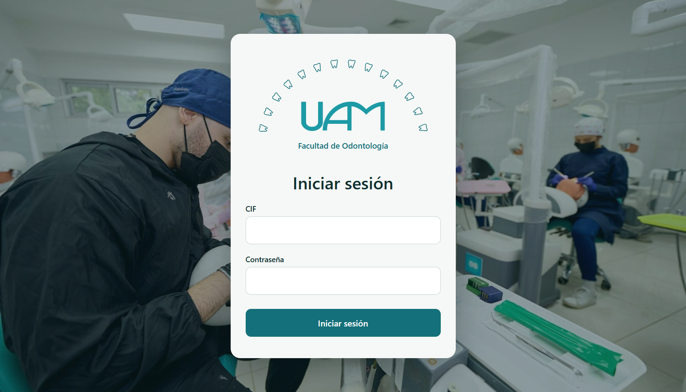
En "Mis pacientes" el estudiante llena nombre, cédula, teléfono y, si lo tiene, el número del expediente físico. La lista muestra la razón de la consulta, si el profesor ya aprobó, si el consentimiento informado está firmado y si el paciente sigue en tratamiento o ya recibió el alta. Cada estudiante ve solo a sus pacientes.
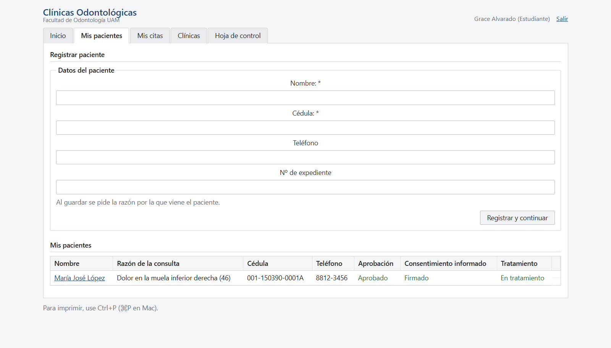
Al registrar, la aplicación pasa sola a preguntar por qué viene el paciente (obligatorio). En la misma pantalla se puede agendar la primera cita, con las mismas reglas que la página de Citas.
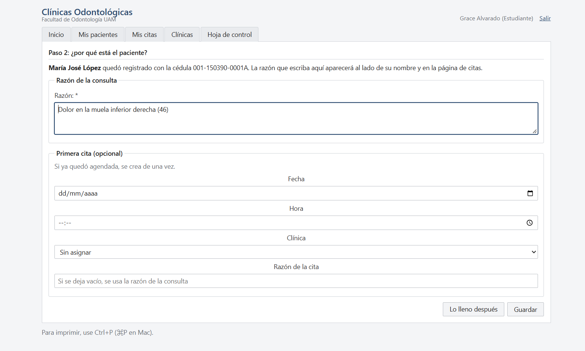
Número de paciente (el que le asigna el sistema) y número de expediente, datos del paciente, estado de la aprobación, de la firma y del odontograma, el trabajo de cada estudiante que lo ha atendido y sus citas. Desde aquí se entra al odontograma, a los tratamientos y cobros y al consentimiento informado, y el estudiante corrige los datos o la razón.
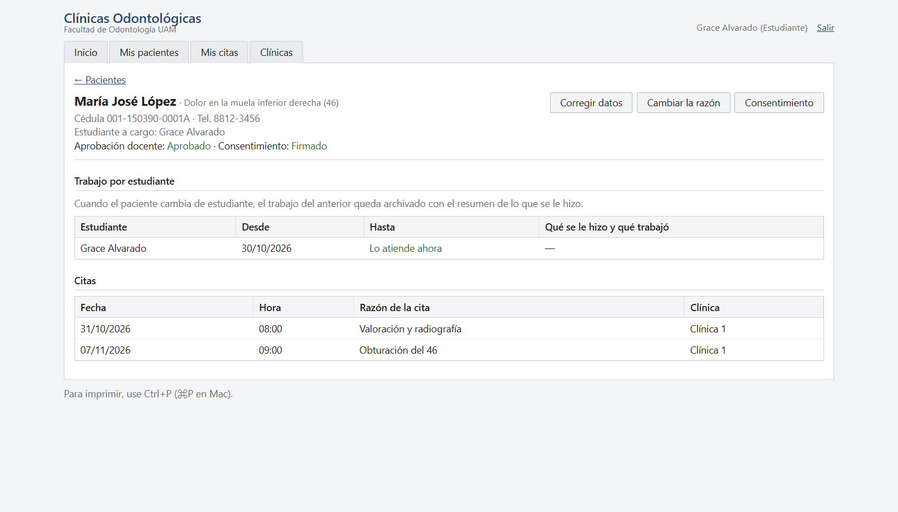
El paciente firma con el dedo (tableta o celular) o con el mouse. La firma se guarda como imagen y sale en la hoja impresa y en el PDF del expediente. El docente no firma. Sin esta firma no se puede marcar ningún tratamiento como realizado.
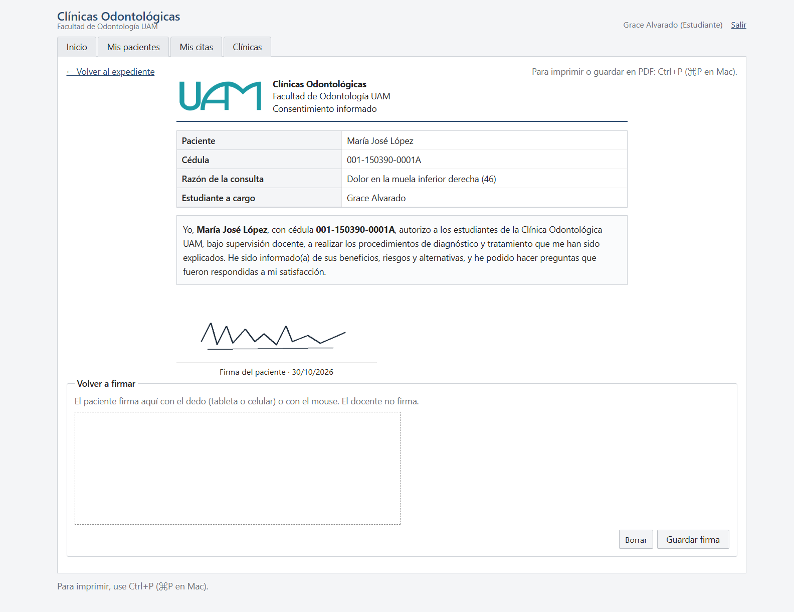
La fecha se elige en el calendario del navegador, que no deja elegir días anteriores a hoy. La clínica se elige en una lista separada en clínicas pregrado y clínicas posgrado; las que no están disponibles salen desactivadas. Las citas que todavía no pasaron se pueden cancelar; las pasadas no, porque son historial del paciente.
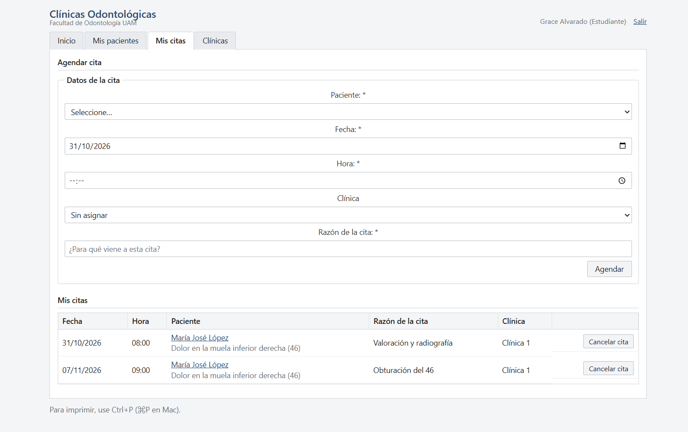
Tiene tres pasos, que la pantalla va marcando: 1) el estudiante sube la foto presencial del paciente (desde el celular la toma con la cámara; se guarda achicada); 2) toca cada diente y anota su estado y una nota: los que no toca quedan sanos; 3) pide la revisión del profesor, que la ve en su Inicio y la aprueba o la devuelve diciendo qué hay que corregir. Si el estudiante cambia algo después de aprobado, hay que volver a pedir la revisión.
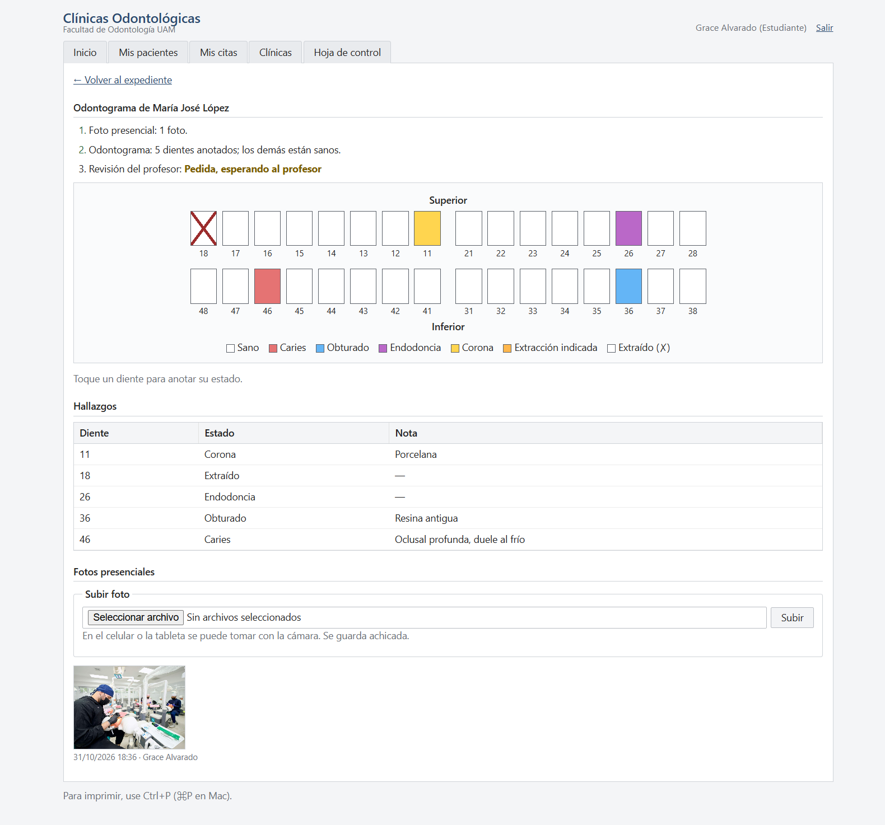
El estudiante anota el plan eligiendo cada procedimiento del tarifario (el precio se copia en ese momento) y, si aplica, el diente. Cuando lo hace, lo marca como realizado; lo realizado ya no se puede quitar. La cuenta del paciente se calcula sola: saldo = lo realizado − lo abonado. Los abonos los registra solo la Facultad. Abajo salen los recibos de pago que el estudiante subió, para compararlos con los abonos.
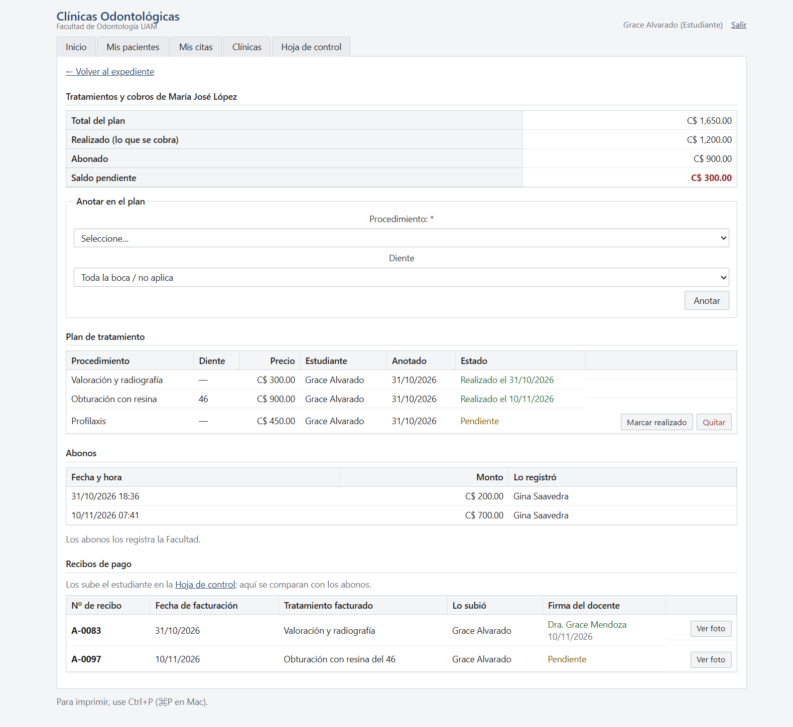
Reemplaza la hoja que el estudiante entregaba a mano al final del curso. Por cada tratamiento que él realizó, sube la foto del recibo con su número y la fecha de facturación; así el número se lee bien y nadie lo copia a mano. La hoja tiene las seis columnas que pidió la Facultad: nº de paciente, nº de expediente, nº de recibo, tratamiento facturado, fecha de facturación y firma del docente.
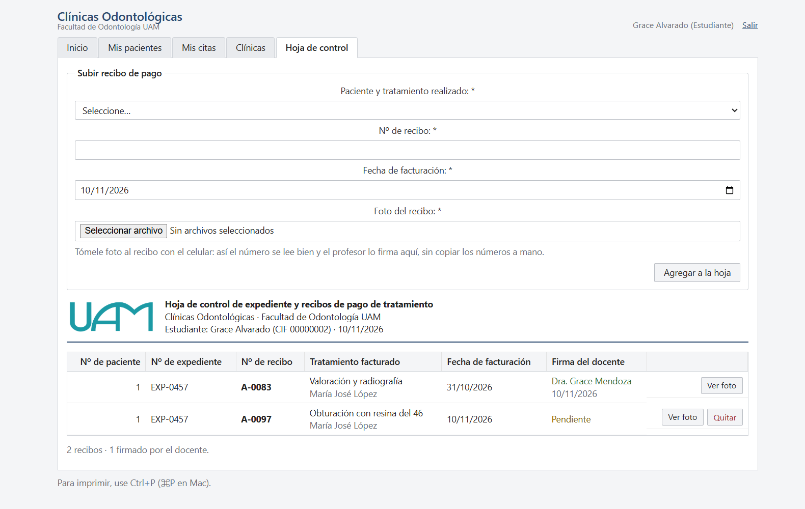
El profesor ve los recibos de todos los estudiantes o de uno solo, abre la foto y firma cada recibo (queda su nombre y la fecha); en la pestaña ve cuántos esperan su firma. Con Ctrl+P la hoja se imprime con el logo y sin botones; los recibos sin firmar quedan en blanco para firmarlos a mano. La Facultad también la puede ver e imprimir.
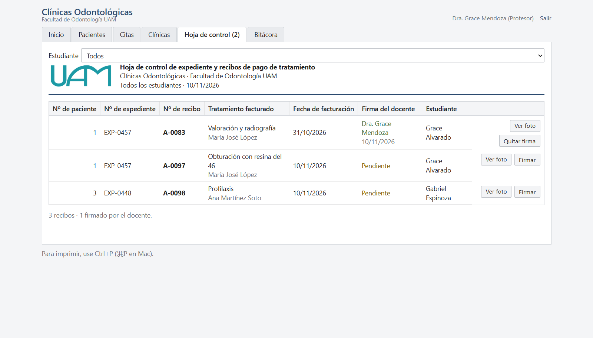
Hay 50 clínicas en dos salas, acomodadas en la pantalla igual que en el edificio: la sala de pregrado tiene 30 unidades en tres filas de diez (Clínicas 1 a 30) y la de posgrado tiene 20 en columnas de 7, 7 y 6 (Clínicas 31 a 50). Cada cuadro es una unidad con su número: ✓ si está disponible, ✗ si no y ! si está reportada. En el celular la sala larga se muestra girada para que quepa. Si una clínica no funciona, el estudiante la elige, escribe qué falla y la envía: la clínica queda como "No funciona" y la Facultad recibe el aviso.
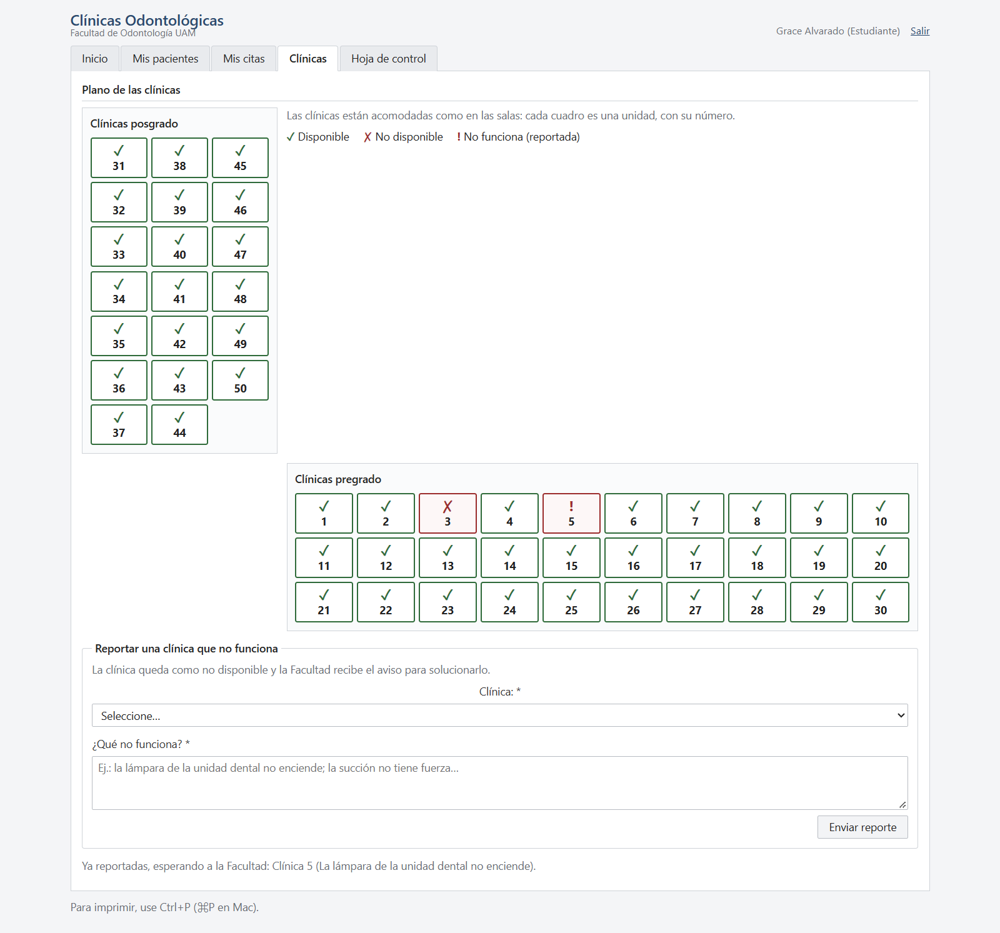
El profesor ve a todos los pacientes con el estudiante a cargo de cada uno, los aprueba o retira la aprobación y descarga el expediente en PDF. No tiene el formulario de registro.
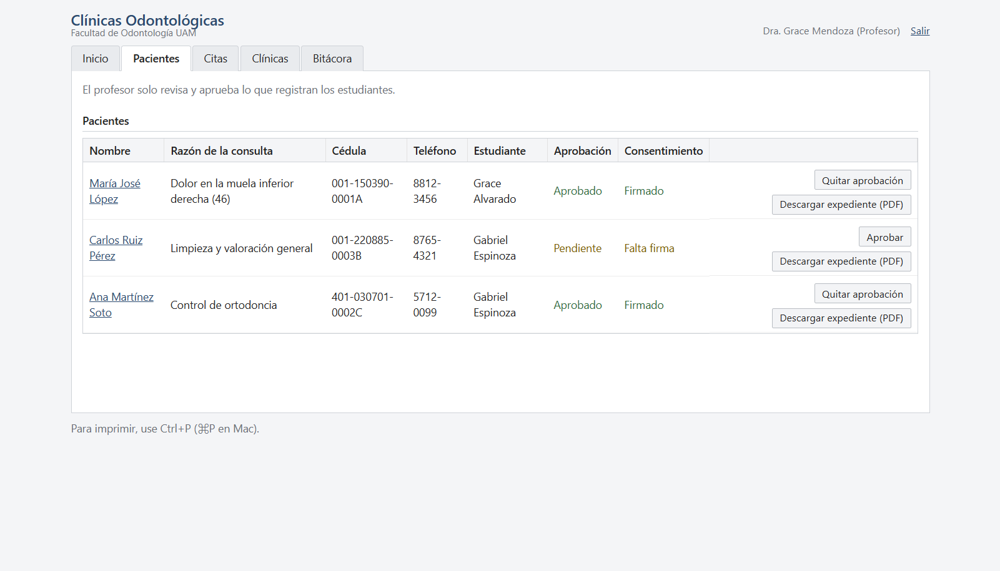
Cuando hay clínicas reportadas o materiales que se están acabando, la Facultad lo ve en Inicio y en las pestañas, que muestran cuántos son: "Clínicas (1)", "Inventario (1)".
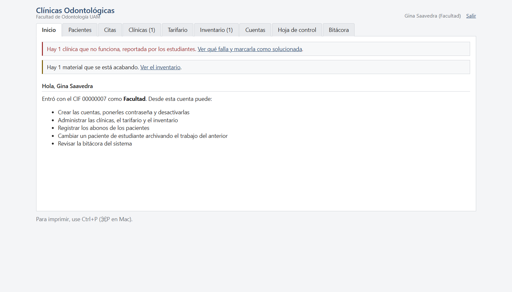
En Clínicas ve qué falla, si es de pregrado o posgrado, quién lo reportó y cuándo. Al marcarla como solucionada, la clínica vuelve a estar disponible y el aviso desaparece. Para marcar una clínica como disponible o no disponible toca su cuadro en el plano. Al agregar una clínica, elige si es de pregrado o de posgrado.
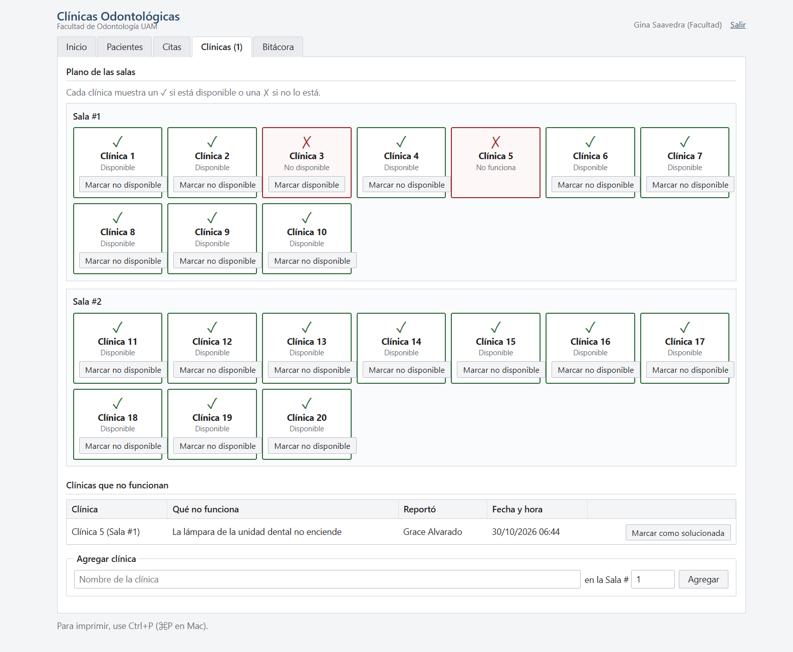
En el tarifario la Facultad pone los procedimientos y sus precios. Cambiar un precio no altera lo que ya está anotado en los planes; un procedimiento desactivado deja de salir para anotarlo, pero no se borra.
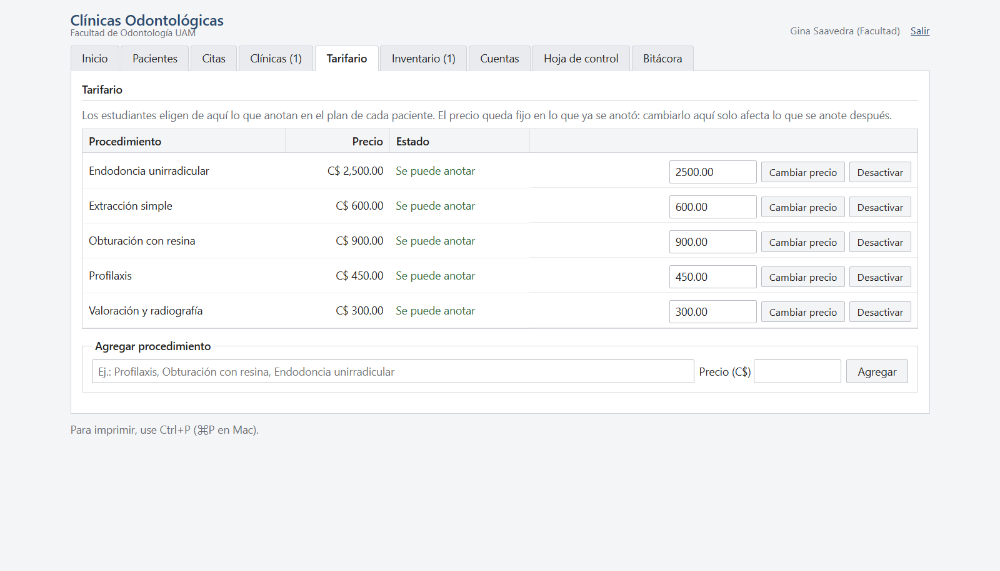
En el inventario anota las entradas y salidas de cada material. No puede salir más de lo que hay, y cuando la cantidad llega al mínimo la Facultad recibe el aviso.
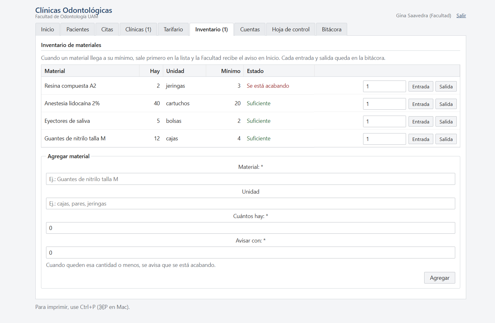
La Facultad crea las cuentas, les pone la contraseña (al menos 8 caracteres) y las desactiva; ponerle una contraseña nueva a una cuenta también la desbloquea. Una cuenta desactivada no entra, pero su nombre sigue en el historial.
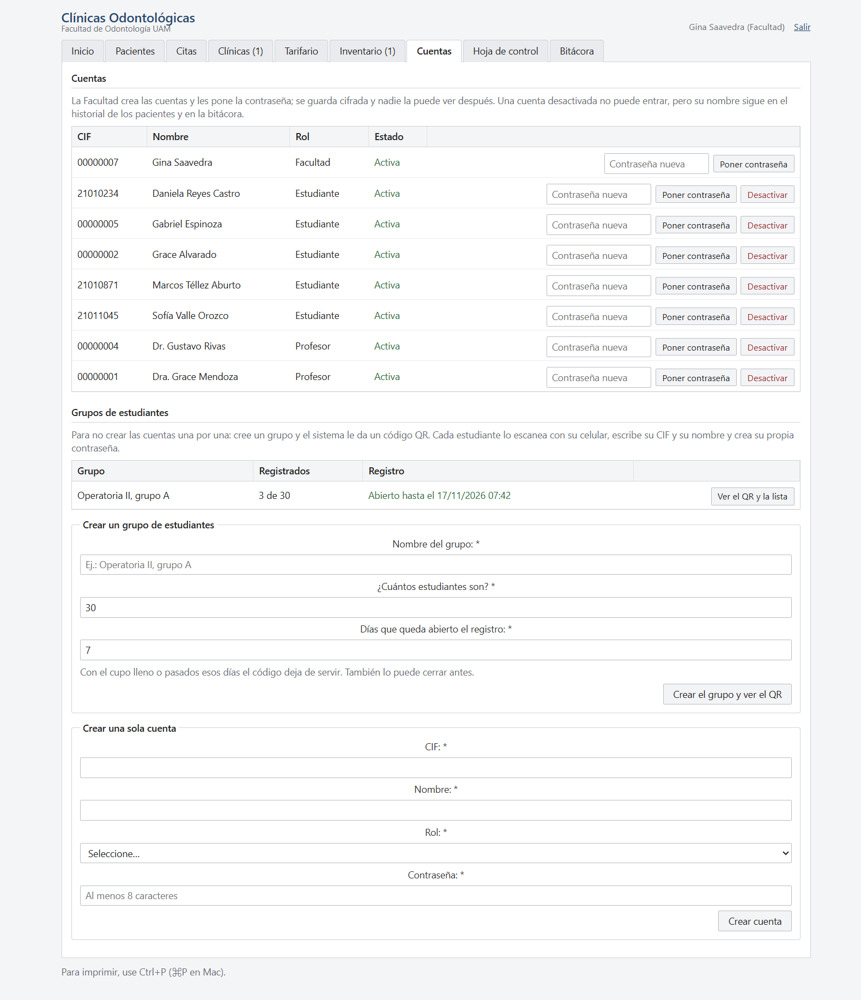
Para no crear una por una las cuentas de un curso, la Facultad crea un grupo: escribe el nombre, cuántos estudiantes son y cuántos días queda abierto el registro. La aplicación le da un código QR para proyectarlo en clase o imprimirlo.
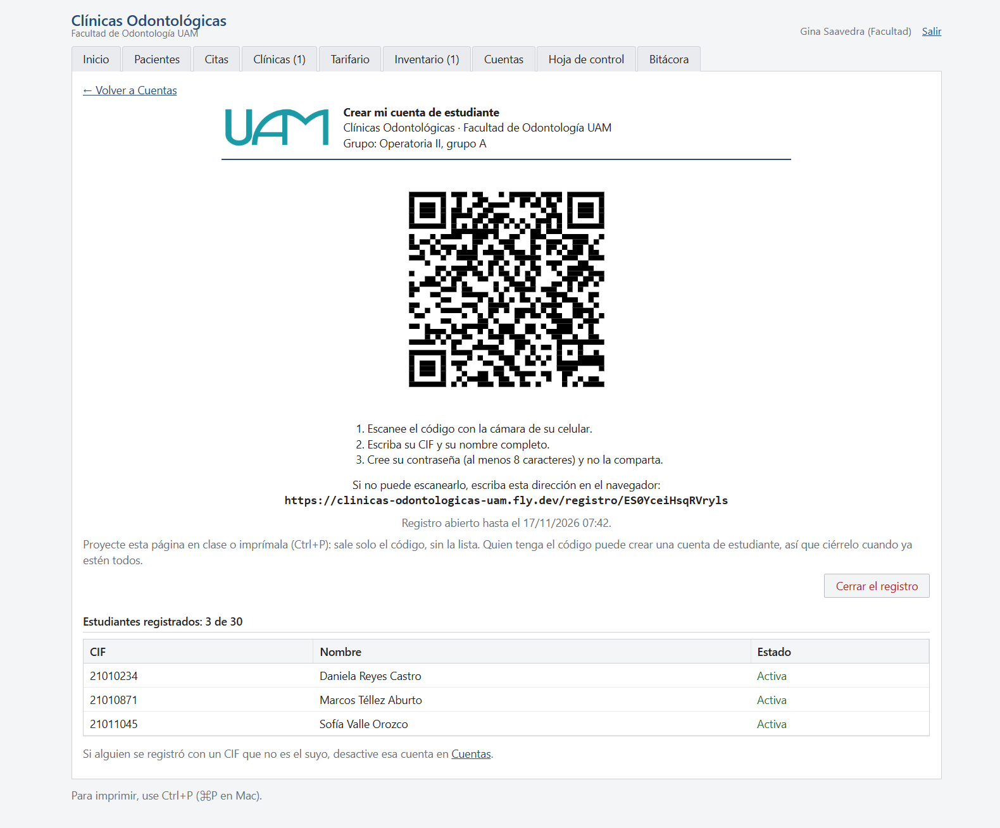
Cada estudiante lo escanea con su celular, escribe su CIF y su nombre y crea su propia contraseña; al terminar queda dentro del sistema. El código deja de servir cuando se llena el cupo, cuando vence o cuando la Facultad cierra el registro, y solo crea cuentas de estudiante.
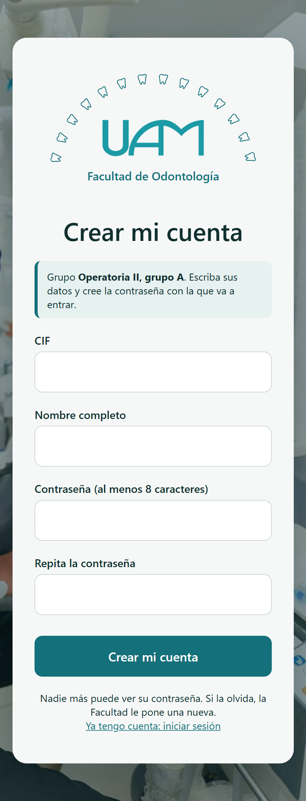
Solo la Facultad. Es obligatorio escribir qué se le hizo al paciente: ese resumen cierra el trabajo del estudiante anterior y queda archivado en el expediente.
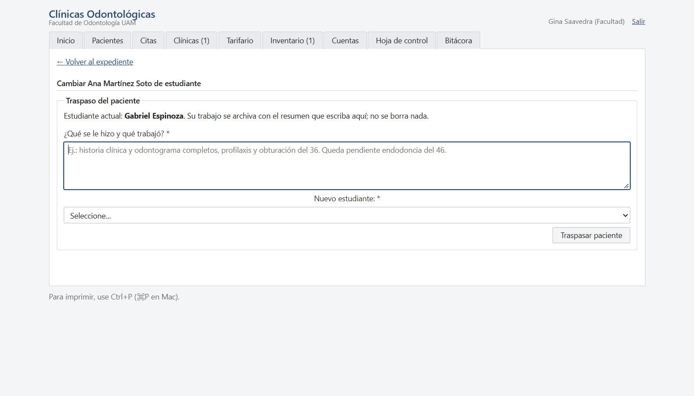
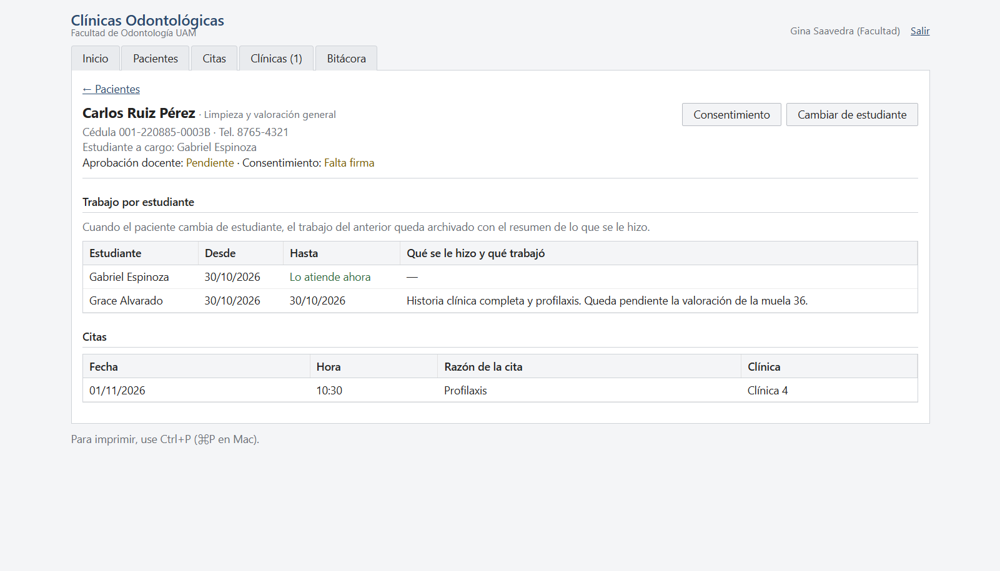
Solo la Facultad. Al dar de alta se escribe cómo terminó el tratamiento y el expediente queda como historial: se ve y se descarga, pero ni el estudiante ni el profesor pueden cambiarlo; la Facultad todavía puede registrar abonos y, si fue un error, anular el alta. Eliminar borra todo el expediente, así que pide el motivo y escribir la cédula del paciente, y no se permite si tiene recibos ya firmados por el docente.
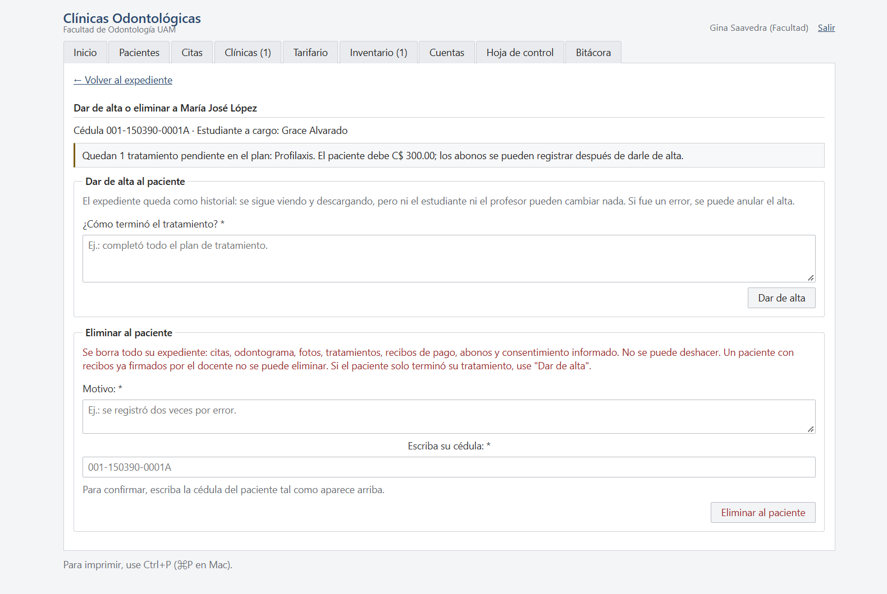
Quién hizo qué, a qué hora (hora de Nicaragua) y desde dónde. La ubicación es la ciudad aproximada de la conexión a internet; la IP solo se usa para averiguarla y no se guarda. La ven el profesor y la Facultad.
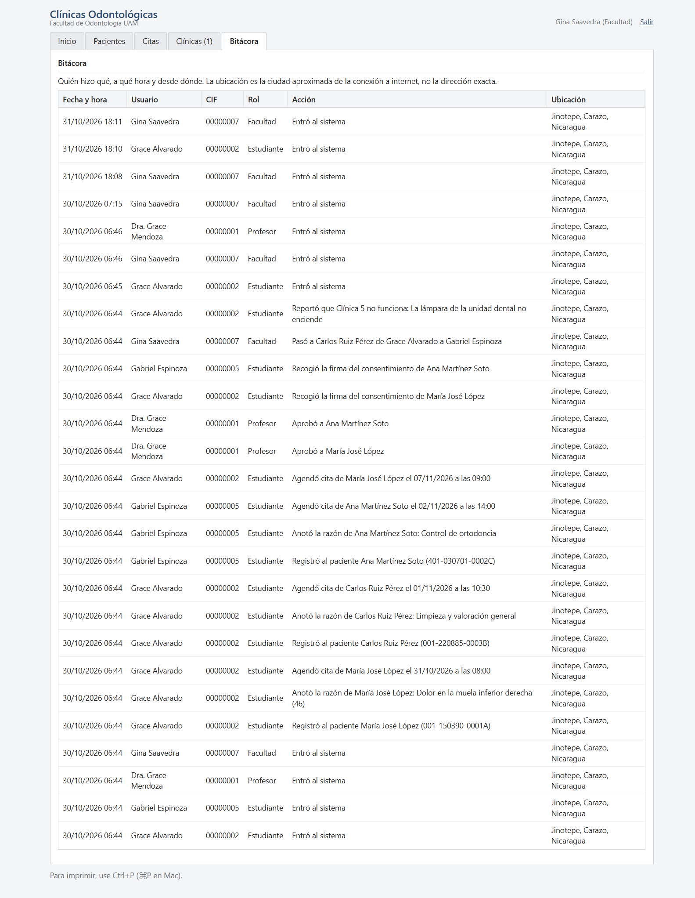
La misma aplicación se acomoda a la pantalla: en el teléfono las pestañas se reparten en varias filas y cada fila de una tabla se ve como una tarjeta, con el nombre de la columna al lado de cada dato, para no tener que deslizar de lado. En teléfono y tableta los campos y botones son más grandes, para tocarlos con el dedo. Cuando una lista está vacía dice qué falta y cómo seguir, y al enviar un formulario el botón muestra que está cargando.
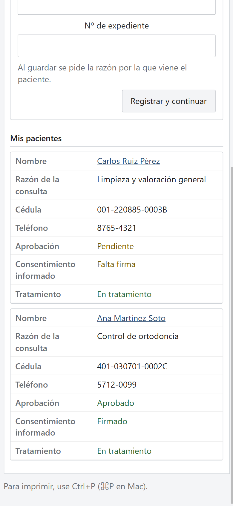
Neon es PostgreSQL en la nube. El proyecto clinicas-odontologicas tiene tres ramas, que son copias
independientes de la base:
| Rama | Para qué |
|---|---|
main | La base real: la que usa la aplicación publicada en Fly. |
pruebas | La usa pruebas.py. Se borra entera cada vez que corren las pruebas. |
capturas | Datos ficticios para las capturas de esta guía. |
Las tablas se crean solas con CREATE TABLE IF NOT EXISTS y las columnas nuevas con
ADD COLUMN IF NOT EXISTS en cada despliegue: lo que ya existe no se toca, así que publicar una versión nueva
nunca borra datos.
Figura 25. Cada flecha es una llave foránea (REFERENCES): apunta a la tabla de la que depende;
las que no llevan nombre son paciente_id. Para no enredar el dibujo no se trazan las flechas hacia
cuentas de las tablas que guardan el CIF de quien hizo algo (trabajo, abonos,
fotos, tratamientos, recibos). Las de línea punteada no tienen llaves foráneas: el
inventario no depende de nadie y la bitácora, a propósito, guarda una copia del nombre y el rol para que el registro no
cambie aunque después cambie la cuenta.
| Tabla | Qué guarda | Detalles que conviene saber |
|---|---|---|
cuentas | CIF, nombre, rol y contraseña de cada usuario; si está activa o bloqueada y con qué grupo se registró. | La contraseña se guarda cifrada (hash), nunca en texto. Los intentos fallidos se cuentan aquí. |
invitaciones | Los grupos de estudiantes: nombre, código del QR, cupo, vencimiento y si ya se cerró. | El código es UNIQUE y lo genera secrets, así que no se puede adivinar. Quién creó el grupo queda en la bitácora: si también se guardara aquí, cuentas e invitaciones se apuntarían la una a la otra (referencia circular). |
pacientes | Nombre, cédula, teléfono, número de expediente, razón, estudiante a cargo, aprobación, firma, revisión del odontograma y alta. | La cédula es UNIQUE: la base no deja repetirla. La firma es la imagen PNG en base64. |
trabajo | Un período por cada estudiante que atendió al paciente. | El período abierto tiene hasta vacío; al traspasar se cierra con el resumen. |
citas | Fecha, hora, clínica, razón y estado de cada cita (Programada, Confirmada, Atendida, Cancelada o No se presentó). | Fecha en formato aaaa-mm-dd para que se ordene bien. Cancelar no borra la cita: queda con su motivo. |
dientes | El estado y la nota de cada diente anotado en el odontograma. | Solo se guardan los que tienen hallazgo; la llave es paciente + diente. |
fotos | Las fotos presenciales del paciente. | La imagen no va en la base: se sube achicada (1600 px, JPEG) a un almacenamiento de archivos y aquí se guarda su dirección (url). Es una tabla aparte porque un paciente tiene varias fotos. |
tarifario | Los procedimientos y sus precios. | No se borran: se desactivan, para no romper los planes que ya los usan. |
tratamientos | El plan de cada paciente: procedimiento, diente, precio, quién lo hizo y cuándo. | El precio se copia del tarifario al anotar; queda a nombre de quien lo marcó como realizado. |
abonos | Los pagos que registra la Facultad. | El monto tiene que ser mayor que cero (CHECK). |
recibos | La hoja de control: número, fecha y dirección de la foto de cada recibo, quién lo subió y qué profesor lo firmó. | El mismo número no se repite para el mismo tratamiento (UNIQUE). La foto, como en fotos, está fuera de la base. |
materiales | El inventario: cantidad y mínimo de cada material. | La cantidad no puede ser negativa (CHECK). |
salas | Las 50 clínicas, su sala (en_sala: 1 pregrado, 2 posgrado) y si están disponibles. | El nombre es UNIQUE. La tabla conserva el nombre salas de cuando se llamaban así; cada fila es una clínica. |
reportes | Las fallas que reportan los estudiantes y quién las solucionó. | Un índice único parcial impide dos fallas abiertas en la misma clínica. |
bitacora | Quién hizo qué, cuándo y desde dónde. | Se muestran las últimas 500 líneas. |
En la consola de Neon (console.neon.tech), en Tables, se elige la rama arriba a la izquierda y la
tabla en la lista; a la derecha salen sus filas. Con Schema se ven las columnas, sus tipos y las restricciones.
pacientes tiene más columnas.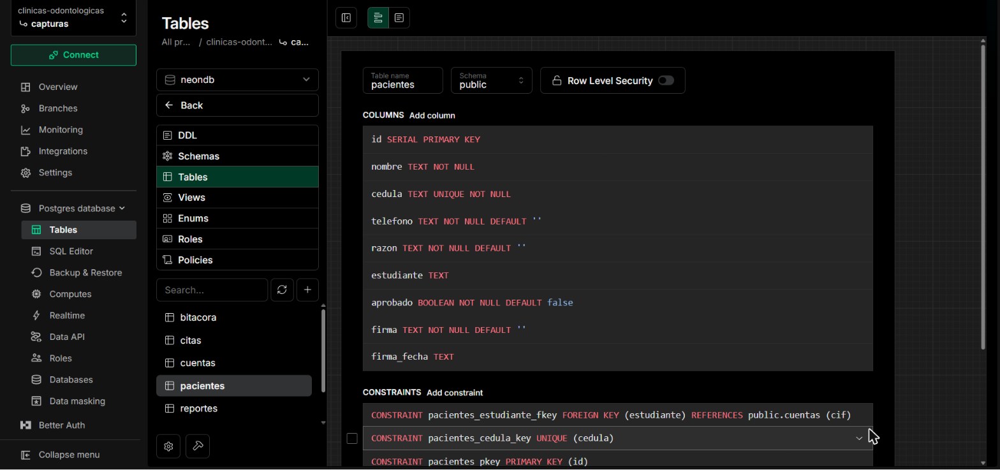
pacientes: la cédula única y la llave foránea del estudiante hacia cuentas.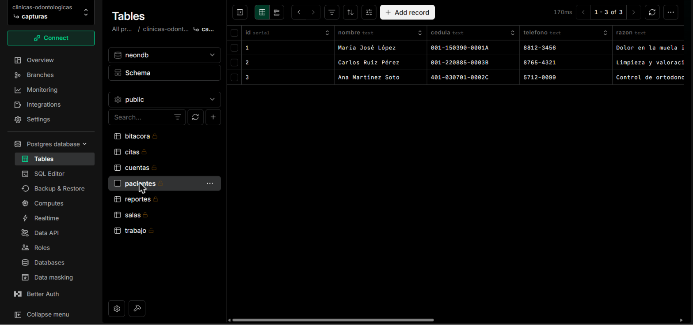
pacientes.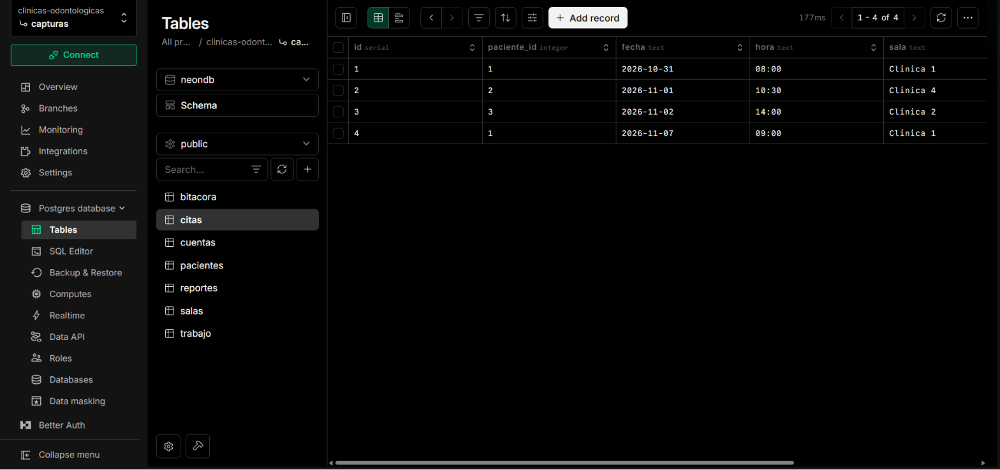
citas: cada cita apunta a su paciente con paciente_id.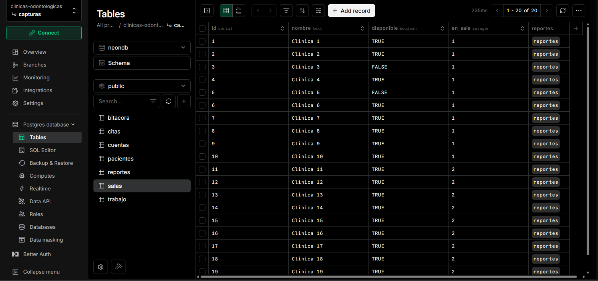
salas: cada fila es una clínica y en_sala dice su sala (1 pregrado, 2 posgrado; la captura es de cuando eran 20 clínicas); la Clínica 3 la marcó la Facultad y la Clínica 5 está reportada.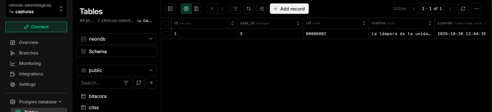
reportes: la falla de la Clínica 5, reportada por el CIF 00000002.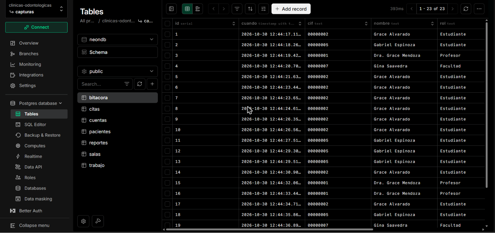
bitacora: la hora se guarda con zona horaria y la aplicación la muestra en hora de Nicaragua.| Dónde | Qué hace | Qué decir si el profesor pregunta |
|---|---|---|
TABLAS y crear_tablas() | Crean las tablas, las cuentas y las 50 clínicas del plano (30 de pregrado y 20 de posgrado). | Se ejecuta en cada despliegue y no borra nada: todo es IF NOT EXISTS y las cuentas y las clínicas usan ON CONFLICT DO NOTHING. Así la base que tenía 20 clínicas pasó a 50 sin perder sus citas ni sus reportes. |
bd() y sql() | Abren una conexión a Neon por petición y la cierran al terminar. | Las consultas usan parámetros (%s), nunca texto pegado, así que no hay inyección SQL. |
quien() | CIF, nombre y rol de quien entró. | Un solo lugar que contesta "¿quién es?"; todas las rutas lo usan. Si la Facultad desactiva la cuenta, la sesión abierta deja de valer. |
exigir_sesion() | Antes de cada petición, sin sesión manda a la entrada. | Es el portón: una ruta nueva queda protegida sin hacer nada. Solo se exceptúan la entrada y el registro con el código de un grupo. |
paciente(pid) | Trae un paciente solo si el usuario puede verlo. | Un estudiante no abre el expediente de otro ni escribiendo el número en la dirección; si el paciente ya recibió el alta, solo la Facultad puede cambiar algo. |
entrar() | Revisa CIF y contraseña, y bloquea la cuenta tras 5 intentos fallidos. | Compara contra el hash con check_password_hash; la contraseña nunca se guarda tal cual. Los intentos se cuentan en la base de datos, así que el bloqueo vale aunque haya varios servidores. |
error_de_cita() | Dice por qué no se puede agendar una cita. | Una sola regla para Citas y para el paso 2: fecha y hora no pasadas (hora de Nicaragua), clínica disponible y no ocupada. |
anotar() y lugar_de() | Escriben la bitácora con la ubicación aproximada. | La ubicación se busca una vez por sesión; si el servicio no responde, la acción se anota igual. |
salas() | Plano de las clínicas, reporte de fallas y su solución. | Reportar y solucionar van en una transacción: o se guarda todo o nada. |
odontograma() y foto_jpeg() | Guardan los dientes y la foto presencial, y llevan la revisión del profesor. | La foto se abre con Pillow: si no es una imagen se rechaza; se endereza, se achica y se guarda como JPEG. |
tratamientos() y cuenta_de() | Plan de tratamiento, abonos y saldo. | El saldo no se guarda: se calcula cada vez (lo realizado menos lo abonado), así nunca queda desactualizado. |
control() y recibos_de() | La hoja de control: subir, quitar y firmar recibos. | El estudiante solo sube recibos de tratamientos que él realizó; lo firmado no se quita y solo el profesor que firmó puede quitar su firma. |
administrar_cuentas(), grupo(), registro() y qr() | Las cuentas y los grupos de estudiantes con su código QR. | El cupo se revisa dentro de una transacción con FOR UPDATE: si dos se registran a la vez por el último lugar, solo entra uno. El QR lo dibuja reportlab, sin librerías nuevas. |
traspaso() | Cambia un paciente de estudiante. | Cierra el período anterior con el resumen y abre uno nuevo, en una transacción. |
cerrar() | Da de alta, anula el alta o elimina a un paciente. | Para eliminar pide la cédula, para que no se borre a nadie por un clic equivocado. |
expediente_pdf() | Arma el expediente en PDF con reportlab. | Se escribe en memoria y se descarga; incluye el odontograma, los tratamientos, los recibos y la firma como imagen. |
@app.route y se lee de corrido, así que se ve cómo se decide cada permiso.Dockerfile. Las claves (la cadena de conexión de Neon y la clave de sesión) viven como secretos de Fly, no en el código.SITIO y no de la computadora donde la Facultad tenga abierto el sistema.@media), sin una aplicación aparte: las mismas plantillas sirven para computadora, tableta y teléfono.Todas están comprobadas en pruebas.py, que dice OK o FALLO por cada caso.
| Qué | Cómo está hoy |
|---|---|
| Que cada persona cambie su contraseña | Hoy solo la Facultad le pone una contraseña nueva a una cuenta; el estudiante que se registra con el QR elige la suya, pero después no la puede cambiar él mismo. |
| Relacionar abonos y recibos | Los abonos (Facultad) y los recibos (estudiante) se ven juntos en el paciente para compararlos, pero el sistema no obliga a que cada abono tenga su recibo. |
| Protecciones extra del navegador | La cookie de sesión ya impide que otra página envíe formularios a nombre del usuario; faltan las cabeceras de seguridad adicionales (por ejemplo Content-Security-Policy). |
| Firma con valor legal pleno | La firma del paciente es su trazo guardado como imagen; una firma digital certificada la tendría que decidir la Facultad. |
main del proyecto clinicas-odontologicas. No se pierden al reiniciar la aplicación.paciente() no entrega un paciente a un estudiante que no lo tiene a cargo, ni sus fotos ni sus recibos; todo viaja por HTTPS y la sesión se vence sola.